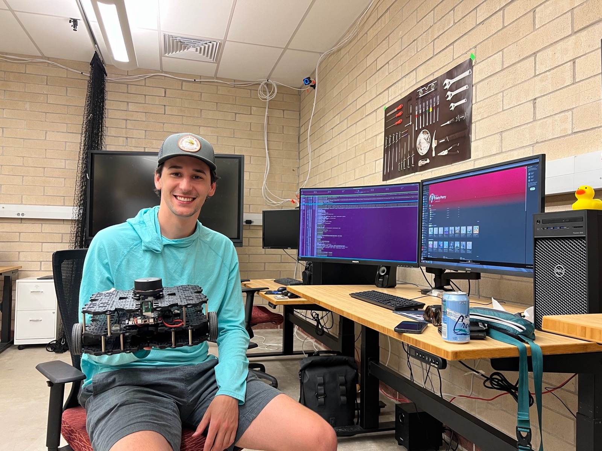

About
Background
Originally from St. Louis, Missouri. I hold an MS in Computer Science (Robotics) and a BS in Computer Science from the University of Denver, where I spent three years as a Research Assistant in the ARISE Lab under Dr. Christopher Reardon. I now work at Sandia National Laboratories as an Autonomy & Counter-Autonomy Researcher, focusing on autonomous testing, physical security evaluation, and adversarial robotics.



Focus
What I Work On
Learning robot behaviors
Multi-agent reinforcement learning for coordinated behavior: MADDPG policies with centralized training and decentralized execution, carried from a 2D training world into a 3D ROS autonomy stack.
How the sim-to-real transfer worked →Computer vision & perception
Detecting, tracking, and localizing people: LiDAR–camera fusion, camera-only range estimation, and EKF-filtered tracks that feed motion prediction.
See the perception pipeline →Navigation
Autonomy where GPS doesn't reach: human-safe navigation in underground mines, SLAM and occupancy-grid planning on Clearpath ground robots, and autonomous testing with Boston Dynamics Spot.
Underground navigation paper →Multi-robot systems
Heterogeneous air–ground teams: FORWARD-PF, my predictive waypoint-assignment algorithm, plus spatial tasking of micro-drones and coordinate-frame alignment across robots.
Read my thesis, illustrated →Human-robot interaction
Robots that work around and with people: augmented-reality visualization of what a robot perceives, user studies with human participants, and person-following that doesn't depend on the person cooperating.
ACM THRI paper →Toolbox
Experience
Work History
Autonomy & Counter-Autonomy Researcher
Aug 2024 — PresentSandia National Laboratories — Albuquerque, NM
- Lead autonomous testing workflows using the Boston Dynamics Spot robot to evaluate and calibrate physical security sensors.
- Conduct red-team assessments of physical security systems using autonomous and semi-autonomous platforms to identify adversarial exploitation paths.
- Research counter-autonomous techniques to detect, mitigate, and defend against adversarial robotic threats.
Graduate Research Assistant
Mar 2022 — Aug 2024University of Denver — ARISE Lab
- Master's thesis: designed FORWARD-PF, a predictive waypoint-assignment algorithm for air–ground person-following, and benchmarked it against a MADDPG multi-agent RL policy adapted from 2D training to a 3D ROS autonomy stack.
- Demonstrated robotic GPS-denied human-safe navigation in sparsely featured underground mine environments.
- Poster presentation at the Robot Teammates in Dynamic Unstructured Environments workshop at ICRA 2023, London.
Journeyman Fellow
Mar 2022 — Jun 2023U.S. Army DEVCOM Army Research Laboratory — Adelphi, MD
- Developed a heterogeneous air-ground robot system with person-following capabilities.
- Presented at the Heterogeneity in Multi-Robot Systems workshop at ICRA 2023, London.
Undergraduate Research Assistant
Jan 2021 — Mar 2022University of Denver — ARISE Lab
- Developed person-following capabilities for a holonomic ground robot platform.
- Ran HRI studies with human participants; awarded Partners in Scholarship Grant (PiNS).
Software Engineer Intern
May 2021 — Aug 2021Trimble Inc. — Westminster, CO
- Led development of an event notification service handling 250,000 messages/day on AWS ECS, Lambda, and SQS.
- Built in Python with Terraform as IaC; delivered features across agile sprints.
Software Development Intern
Jun 2019 — Sep 2019Centene Corporation — St. Louis, MO
- Converted monolithic code into microservices using Golang to maintain and improve database APIs.

Education
Academic Background
MS, Computer Science — Robotics
2022 — 2024University of Denver — Ritchie School of Engineering & Computer Science
Thesis: Heterogeneous Multi-Robot Person-Following in Constrained Environments · Advisor: Dr. Christopher Reardon
BS, Computer Science
2018 — 2022University of Denver
Minors in Entrepreneurship Management and Mathematics
Publications
Research
My thesis, illustrated ✦
A plain-English, visual walkthrough of my M.S. thesis: two robots, one person to follow, and a hand-built forecaster versus multi-agent RL, from sim-to-real transfer to hardware.
Heterogeneous Multi-Robot Person-Following in Constrained Environments (M.S. Thesis)
Ori A. Miller · Advisor: Dr. Christopher Reardon · University of Denver · August 2024
Heterogeneous Multi-Robot Person-Following in Constrained Environments
Ori A. Miller, Jason M. Gregory, Christopher Reardon · IEEE SSRR · November 2024
Augmented Reality Visualization of Autonomous Mobile Robot Change Detection in Uninstrumented Environments
Christopher Reardon, Jason M. Gregory, Kerstin S. Haring, Benjamin Dossett, Ori A. Miller, Aniekan Inyang · ACM Transactions on Human-Robot Interaction (THRI) · 2023
Teaming Heterogeneous Ground and Micro-Aerial Robots for Following of Non-Cooperative Agents
Ori A. Miller, Christopher Reardon, Jason M. Gregory · Heterogeneity in Multi-Robot Systems Workshop, ICRA · London, UK · May 2023
Autonomous Agent-aware Navigation in Underground Mine Environments
Ori A. Miller, Christopher Reardon · Heterogeneous Multi-Robot Cooperation in Extreme Environments Workshop, ICRA · London, UK · May 2023